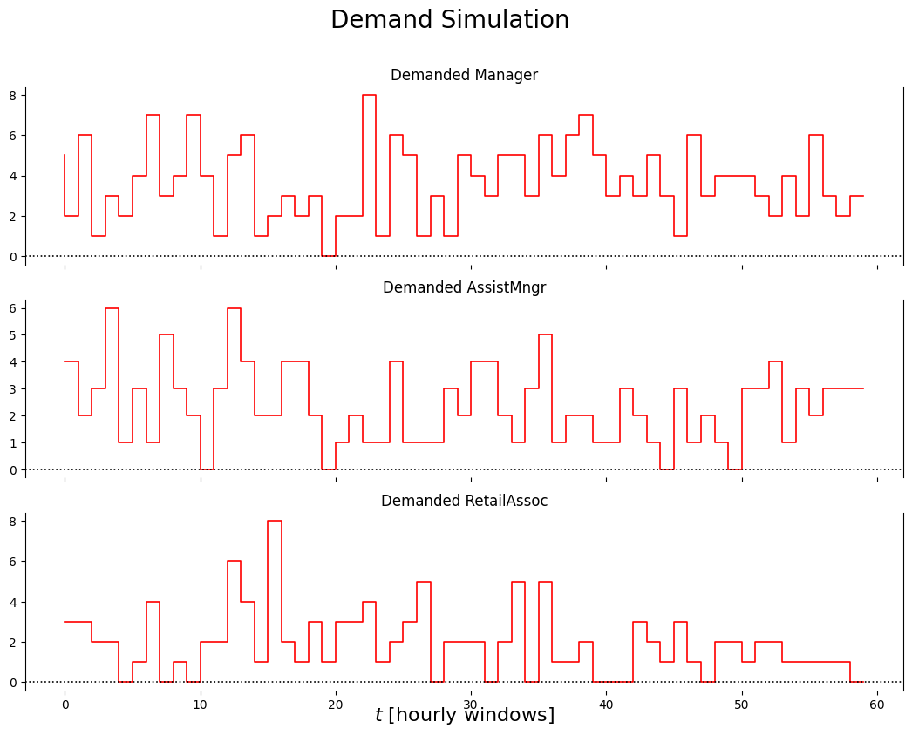

# Set up autoreloadsimulators
Simulates data for demands & merits
np.__version__'1.24.4'# !pip freeze | grep pandas
# !pip freeze|grep openpyxl
# !pip freeze# !pip install -U ray==2.8.1
# !pip install openpyxlDemand simulation
class DemandSimulator():
def __init__(self,
T__sim=cf.SIM_T,
muD=cf.SIM_MU_D,
eventTimeD=cf.SIM_EVENT_TIME_D,
muDeltaD=cf.SIM_MU_DELTA_D,
seed=None):
self.time = 0
self.T__sim = cf.SIM_T
self.muD = cf.SIM_MU_D
self.eventTimeD = cf.SIM_EVENT_TIME_D
self.muDeltaD = cf.SIM_MU_DELTA_D
self.prng = np.random.RandomState(seed)
def simulate(self):
if self.time > self.T__sim - 1:
self.time = 0
D_tt1 = {}
for bn in cf.bNAMES:
if self.eventTimeD[bn] and self.time > self.eventTimeD[bn]: ##event for entity
D_tt1[bn] = self.muDeltaD[bn] + self.prng.poisson(self.muD[bn]) ##after event
else:
D_tt1[bn] = self.prng.poisson(self.muD[bn])
self.time += 1
return {bn: max(0, D_tt1[bn]) for bn in cf.bNAMES} ##always positiveExample of usage
dem_sim = DemandSimulator(seed=1234)
DemandData = []
for i in range(cf.SIM_T):
d = list(dem_sim.simulate().values())
DemandData.append(d)
labels = [f'{bn}_dem' for bn in cf.bNAMES]
df = pd.DataFrame.from_records(data=DemandData, columns=labels); df[:10]| Manager_dem | AssistMngr_dem | RetailAssoc_dem | |
|---|---|---|---|
| 0 | 5 | 4 | 3 |
| 1 | 2 | 4 | 3 |
| 2 | 6 | 2 | 3 |
| 3 | 1 | 3 | 2 |
| 4 | 3 | 6 | 2 |
| 5 | 2 | 1 | 0 |
| 6 | 4 | 3 | 1 |
| 7 | 7 | 1 | 4 |
| 8 | 3 | 5 | 0 |
| 9 | 4 | 3 | 1 |
def plot_output(df1, df2):
n_charts = len(cf.bNAMES)
ylabelsize = 16
mpl.rcParams['lines.linewidth'] = 1.2
default_colors = plt.rcParams['axes.prop_cycle'].by_key()['color']
fig, axs = plt.subplots(n_charts, sharex=True)
fig.set_figwidth(13); fig.set_figheight(9)
fig.suptitle('Demand Simulation', fontsize=20)
for i,bn in enumerate(cf.bNAMES):
axs[i].set_title(f'Demanded {bn}')
axs[i].set_ylim(auto=True); axs[i].spines['top'].set_visible(False); axs[i].spines['right'].set_visible(True); axs[i].spines['bottom'].set_visible(False)
axs[i].step(df1[f'{bn}_dem'], 'r-')
## axs[i].axhline(y=dem_sim.muD[e], color='k', linestyle=':')
axs[i].axhline(y=0, color='k', linestyle=':')
axs[i].set_xlabel('$t\ \mathrm{[hourly\ windows]}$', rotation=0, ha='center', va='center', fontweight='bold', size=ylabelsize)plot_output(df, None)
Merit simulation
#/// MERIT_PROBS = load_merit_probs(f'{base_dir}/{file_name}')cf.MERIT_PROBS| ResourceId | MeritProb | DemeritProb | |
|---|---|---|---|
| 0 | 1 | 0.0100 | 0.0400 |
| 1 | 2 | 0.2000 | 0.0900 |
| 2 | 3 | 0.3000 | 0.0300 |
| 3 | 4 | 0.2000 | 0.1500 |
| 4 | 5 | 0.0500 | 0.0200 |
| 5 | 6 | 0.1000 | 0.0100 |
| 6 | 7 | 0.2000 | 0.0200 |
| 7 | 8 | 0.3000 | 0.3000 |
| 8 | 9 | 0.2000 | 0.0100 |
| 9 | 10 | 0.0600 | 0.1200 |
## copy from the generated file and paste into ExogInfo tab of shift_scheduler_data.xlsx
class MeritSimulator():
def __init__(self, seed=None):
self.prng = np.random.RandomState(seed)
def simulate(self):
M_tt1 = {}
for an in cf.aNAMES:
resourceId,_ = an.split('_')
a,b = cf.MERIT_PROBS.loc[
cf.MERIT_PROBS['ResourceId'] == resourceId,
['MeritProb', 'DemeritProb']
].values[0]
if np.random.uniform() < a: merit = 1
else: merit = 0
if np.random.uniform() < b: demerit = 1
else: demerit = 0
M_tt1[an] = merit - demerit ##net merit
return M_tt1Example of usage
## breaks, need to fix
# ## copy from the generated file and paste into ExogInfo tab of shift_scheduler_data.xlsx
# mer_sim = MeritSimulator(seed=1234)
# MeritData = []
# # for i in range(100):
# for i in range(672):
# mer = list(mer_sim.simulate().values())
# MeritData.append(mer)
# labels = [f'{an}_merit' for an in cf.aNAMES]
# df = pd.DataFrame.from_records(data=MeritData, columns=labels); df[:10]# ////////////////////////////////////# cf.bNAMES['Manager', 'AssistMngr', 'RetailAssoc']# an = cf.aNAMES[0]# # resourceId,_ = an.split('_'); resourceId
# _,resourceId = an.split('_'); resourceId'Matt'# # MERIT_PROBS
# cf.MERIT_PROBS['ResourceId']| ResourceId | MeritProb | DemeritProb | |
|---|---|---|---|
| 0 | 1 | 0.0100 | 0.0400 |
| 1 | 2 | 0.2000 | 0.0900 |
| 2 | 3 | 0.3000 | 0.0300 |
| 3 | 4 | 0.2000 | 0.1500 |
| 4 | 5 | 0.0500 | 0.0200 |
| 5 | 6 | 0.1000 | 0.0100 |
| 6 | 7 | 0.2000 | 0.0200 |
| 7 | 8 | 0.3000 | 0.3000 |
| 8 | 9 | 0.2000 | 0.0100 |
| 9 | 10 | 0.0600 | 0.1200 |
# ///
# a,b = MERIT_PROBS.loc[
# MERIT_PROBS['ResourceId'] == resourceId,
# ['MeritProb', 'DemeritProb']
# ].values[0]# aNAMES['Manager_Matt',
'AssistMngr_Mike',
'AssistMngr_Tanner',
'RetailAssoc_Jake',
'RetailAssoc_James',
'RetailAssoc_Jane',
'RetailAssoc_John',
'RetailAssoc_Jim',
'RetailAssoc_Jenny',
'RetailAssoc_Jeremy',
'RetailAssoc_Judy',
'RetailAssoc_Julie',
'RetailAssoc_Jeffrey']# \\\\\\\\\\\\\\## copy from this file and paste into ExogInfo tab of shift_scheduler_data.xlsx
## df.to_excel('merits.xlsx', index=False)## breaks, need to fix
# import random
# def plot_output(df1, df2):
# n_charts = len(cf.aNAMES)
# ylabelsize = 16
# mpl.rcParams['lines.linewidth'] = 1.2
# default_colors = plt.rcParams['axes.prop_cycle'].by_key()['color']
# fig, axs = plt.subplots(n_charts, sharex=True)
# fig.set_figwidth(13); fig.set_figheight(9)
# fig.suptitle('Merit Simulation', fontsize=20)
# for i,an in enumerate(cf.aNAMES):
# axs[i].set_title(f'Merits for {an}')
# axs[i].set_ylim(-1, 1); axs[i].spines['top'].set_visible(False); axs[i].spines['right'].set_visible(True); axs[i].spines['bottom'].set_visible(False)
# axs[i].step(df1[f'{an}_merit'], 'r-')
# ## axs[i].axhline(y=dem_sim.muD[e], color='k', linestyle=':')
# axs[i].axhline(y=0, color='k', linestyle=':')
# axs[i].set_xlabel('$t\ \mathrm{[hourly\ windows]}$', rotation=0, ha='center', va='center', fontweight='bold', size=ylabelsize)
# plot_output(df, None)